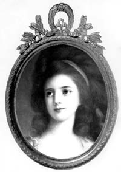
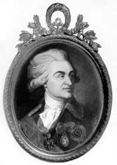
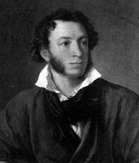
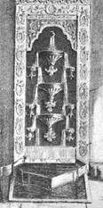
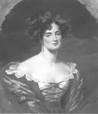

Приближается 200-летие со дня рождения гения мировой культуры А.С.Пушкина и 210-летие Николаева. Но мало кто знает, что эти два события в истории нашего края связаны с историей любви основателя Николаева Г.А.Потемкина и А.С.Пушкина к двум женщинам с одинаковым именем — Софья Потоцкая — к матери и ее дочери, характеры и судьбы которых настолько сильно отличались, насколько они были близки друг к другу в родстве. Об истории любви к этим двум замечательным женщинам мой рассказ. Две истории о любви.
Приближается 200-летие со дня рождения гения мировой культуры А.С.Пушкина и 210-летие Николаева. Но мало кто знает, что эти два события в истории нашего края связаны с историей любви основателя Николаева Г.А.Потемкина и А.С.Пушкина к двум женщинам с одинаковым именем — Софья Потоцкая — к матери и ее дочери, характеры и судьбы которых настолько сильно отличались, насколько они были близки друг к другу в родстве. Об истории любви к этим двум замечательным женщинам мой рассказ. Две истории о любви.
ПЕРВАЯ ИСТОРИЯ
Основание Николаева и любовь Потемкина.
 
{kind=link}
Г.А. Потемкин (1739-1791) С.К. Потоцкая(1760-1822)
Нравится нам или нет, но судьба каждого города каким-то странным образом является продолжением характеров и судеб их основателей. Не буду говорить «за Одессу», основателем которой был испанец Дерибас, скажу о нашем городе. Современники Пушкина оставили нам свои воспоминания о том, что Николаев своим рождением обязан любви Потемкина к Софье Потоцкой (тогда — Софье Витт). Вот, например, что писал в 1818 году Н.Левицкий в «Украинском вестнике» после посещения нашего города:
«Знаете ли вы историю Николаева? «Он построен по повелению Князя Потемкина», — скажете вы, и вы ошиблись. Гр.В*(Витт — А.З.) причиною тому, что родился и возрос, возрос и распустился сей цветок среди одичалой природы. Женщина прелестная с прекраснейшей еще душою, с чувствительным сердцем, с тонким умом, словом, женщина-Гений умела привлечь сердце Гения-героя. Одно ея слово, и на диких берегах Ингула явился город, на месте бедных рыбачьих хижин огромные палаты Спасск и Богоявленск (ныне Яхт-клуб и Корабельный район — А.З.); одно ея слово, и волшебная рука искусства одела нагия скалы и песчаные холмы скромными рощицами и великолепными садами, бережно провела светлые источники; они резвились, прыгали и, дробясь по камешкам, журчанием своим одушевляли мертвую пустыню.»
Кем же была Софья Константиновна Потоцкая? Сразу скажу, что документальных сведений о ее происхождении не сохранилось и существует три версии о том, как она оказалась в России. Но все они сходятся на том, что ее, 12-летнюю девочку, купил в Константинополе в 1778 году у ее матери польский или французский посол и что она жила там в предместье Фанаре, почему ее и называли прекрасной фанариоткой. Так назывались потомки знатных греческих фамилий, избежавших расправы при завоевании турками Константинополя. Но польский посол (мне кажется это более правдоподобным) не довез ее до Польши. По дороге сын Каменец-Подольского коменданта майор Иосиф Витт перекупил Софью де Челиче, Глявоне или Маврокордато, так она сама называла себя, за 1000 червонцев и женился на ней.
В 1779 году они уехали в Париж. Говорят, что несколько лет прекрасная фанариотка, обладавшая природным умом, блистала там на балах и многим вскружила голову, в том числе и королю. В 1785 году умирает отец Витта, и сыну пришлось возвратиться в Польшу занять пост отца, и тут Софья Витт покорила уже весь польский свет. Весть о небывалой красоте и уме Софьи Витт дошла до Потемкина, и тот пригласил Иосифа Витта к себе на службу. Вскоре он доставил Витту генеральский чин, графский титул Российской империи и назначил его комендантом Херсона, взамен исключительного права иметь повсеместной спутницей его жену.
При посещении Крыма Екатериной II Потемкин щеголял Софьей, как самым большим своим завоеванием. В его архиве сохранились письма, в которых он после взятия Очакова на день Святого Николая (зимнего) заказывал роскошные платья для нее. В «Записках Александра Михайловича Тургенева» сообщается, что во время осады Очакова, «когда войско умирало от холода, голода и житья в землянках, князь Потемкин в главной квартире своей, в лагере, давал балы, пиры, жег фейерверки.., куртизанил с… бывшею прачкою в Константинополе, потом польской службы генерала графа Витта женою, потом купленною у Витта в жены себе графом Потоцким и, наконец, видевшей у ног своих обожателями министров и королей; будучи уже в преклонных летах, графиня София Потоцкая была предметом внимания даже Александра Павловича».
Удалось найти мне в архивах и подробные записки Василия Степановича Попова, правителя канцелярии и доверенного лица Потемкина, который писал: «Он имел у себя полную капель музыки, выписывал танцевальщиков из Франции, имел собственный театр, который переезжал за ним во все места, содержал за дорогую цену виртуозов разного рода, певиц, плясунов, плутов, забавных дураков и даже хор раскольников, кои распевали старинное столповое пение, когда ему было угодно… Потемкин знал несколько языков, любил литературу: он и пред стенами Очакова перевел один том церковной истории Аббата Фиери и написал несколько шутливых стихотворений.»
Потемкин очень хорошо понимал роль личности в истории и распекал строителя Николаева М.Л.Фалеева за неисполнение его поручений в отношении солдат, говоря, что всё равно его неисполнение припишут в будущем Потемкину. Попов пишет, что князь, по натуре будучи противоречивым человеком, «…обещания свои выполнял, никогда ничего не забывал. Он читал много даже во время военных действий, обращаясь с самыми искусными людьми во всех науках и художествах, и никто лучше его не имел знаний. Он удивлял собою императора, художника, богослова. Он имел множество добродетелей и не меньше пороков.»
От себя добавлю, что он был бездарным полководцем, но зато одел армию в самую удобную форму, и когда он не вмешивался в дела А.В.Суворова, то победы одерживались достаточно быстро. Потемкин действительно хотел сделать Николаев столицей всего Новороссийского края, в одном из архивов я нашел проект карты с новым переименованием, датированной 1791 годом. Он пригласил сюда лучших мастеров для строительства и украшения нашего города, и это тоже было данью любви к Софье Потоцкой.
Вот что писала французская портретистка Виже-Лебрен, посетившая лагерь Потемкина: «Ему всё было нипочем, лишь бы удовлетворить желанию, капризу обожаемой им женщины. Влюбленный в госпожу де Витт, он расточал перед нею самые изысканные любезности. Так, однажды, желая подарить ей кашемировую шаль безумно высокой цены, он дал праздник, на котором было до двухсот дам, а после обеда устроил лотерею, но так, что каждой досталось по шали, а лучшая из шалей выпала на долю самой прекрасной из дам.»
Но планам Потемкина не суждено было сбыться. К 1790 году обострились отношения между ним и Екатериной II, которую всё больше и больше волновало то, что у Потемкина сосредоточилось слишком много власти. Он становился всё более неуправляемым. Князь практически оставил ее как любовник, и ей пришлось искать нового фаворита (им стал П.А.Зубов). Имея кличку запорожских казаков Грицько Нечеса, отказался разгонять Запорожскую Сечь, и ей пришлось давать команду генералу Теккелею. Часть запорожцев, которая не ушла за Дунай, он принял на службу и дал им лучшие земли между Днестром и Южным Бугом.
Правда, после его смерти императрица «исправила его деяния» и отослала всех казаков на Кубань и Тамань. Ее пугал грандиозный «греческий проект» Потемкина по восстановлению на территории низложенной Турции византийского царства с императором из дома Романовых и возможного возвращения Софьи Витт на родину. Для этого Потемкин начал строить 300 малых судов в Николаеве и Херсоне. С большим трудом императрице удалось «уговорить» Потемкина заключить мир с турками. Кроме того, она была уже стара и боялась за судьбу престола, в случае, если бы Потемкин ее пережил.
В архиве мне удалось найти свидетельство одного из придворных о том, что Екатерина II дала указания молодому доктору, которого только что выучила в Европе и которого она направила к князю, отравить его, что, возможно, и было выполнено 5 октября 1791 года. Императрица пережила Потемкина всего лишь на 5 лет. Как же дальше сложилась судьба Софьи Витт?
Выполняя тайные поручения Потемкина и Екатерины II, она ездила на сейм в Варшаву в 1788 году и убедила магната и коронного гетьмана, графа Феликса-Станислава Потоцкого примкнуть к Тарговицкой конфедерации, после чего последовало восстание Костюшко — и Потоцкий оставил родину. От любви к ней Потоцкий потерял не только родину, но и голову. Его можно понять, глядя на пастельный портрет Софьи Потоцкой работы итальянского мастера Сальваторе Тончи 1796 года. После многолетнего торга Потоцкий выкупил её за два миллиона польских злотых у Витта, но до смерти своей жены Жозефины-Амалии Мнишек-Потоцкой, известной художницы итальянской школы, в 1798 году он так и не мог с ней обвенчаться.
Поселившись в Умани, он создал для неё роскошный парк, названный Софиевским, который и сегодня радует его посетителей. Но подруга жизни оказалась ему неверна, связалась с пасынком Юрием Потоцким, он застал их в любовных утехах, не смог этого перенести. В 1805 году старый граф умер, не попрощавшись с женой. Вакханалия продолжалась ещё четыре года, пока пасынок не проиграл почти всё своё состояние, и впервые неотразимая красавица оказалась брошенной. Она рассталась с Юрием, обеспечив ему роскошное существование в Париже, где он вскоре и скончался. «Баядерка от рождения», она под старость становится добродетельной «матроной», старается забыть прежнюю жизнь, сохраняя преданную память только к Потёмкину, которого до конца «жалела, как родного брата». И было отчего, именно Потёмкин подарил ей большое греческое селение Масандру, имения в Симеизе, Мисхоре и дачу вблизи Симферополя. С 1810 года Софья Потоцкая «нравственно хорошеет», занимаясь искуплением грехов и воспитанием детей.
ВТОРАЯ ИСТОРИЯ
Фонтан слёз и утаенная любовь Пушкина
|  |  |  |
{kind=link}
{kind=link}
{kind=link}
Известно, что любовь к женщине для Пушкина была живительным источником его вдохновения и творчества. Он любил очень многих женщин и как-то, накануне женитьбы, очевидно, подводя итог любовным увлечениям, зимой 1829-1830 года, будучи в гостях у московских сестёр Екатерины и Елизаветы Ушаковых, набросал им в альбом два списка женщин, которых любил. Список впоследствии получил название Дон-Жуанского.
Первый был списком серьёзных увлечений, его заканчивала будущая жена Наталья, а второй — менее серьёзных. Так вот, уже в первом списке поэт ввел интригу тем, что четвертую позицию обозначил NN. А несколько ранее в черновом посвящении к поэме «Полтава» поэт записал: «Иль посвящение поэта, Как утаённая любовь, Перед тобою без привета Пройдёт непризнанною вновь?» В беловом варианте читаем: «Как некогда его любовь» — вместо «утаённой любви». Кого только не прочили на место NN!
Недавно была переиздана редкая до того книга П.Губера «Дон-Жуанский список А.С.Пушкина», в котором перечислено несколько претенденток на утаённую любовь. Вообще же называлось 8 претенденток: Мария Аркадьевна Голицына, внучка генералиссимуса А.В.Суворова, графиня Наталья Викторовна Кочубей, в замужестве Строганова, 4 дочери прославленного в войне 1812 года генерала Н.Н. Раевского — Екатерина, Елена, Мария (Волконская), Софья — и жена историка Екатерина Андреевна Карамзина. И ни одна из них, как мне казалось, не подходила на эту роль.
Наконец, просматривая том 3 издания Пушкинского Дома (ИРЛИ АН СССР) «Пушкин. Исследования и материалы», я нашёл статью Л.П.Гроссмана «У истоков «Бахчисарайского фонтана». Она меня поразила удивительным попаданием в точку, здесь впервые достаточно обоснованно была названа Софья Станиславовна Потоцкая. Оставалось неясным, как автор вышел на эту тропу. В одну из поездок в Санкт-Петербург, получив специальное разрешение на ознакомление с оригиналом рукописи «Дон-Жуанского списка» (все рукописи Пушкина хранятся в Пушкинском Доме), вооружившись лупой, я с удивлением прочитал рядом с NN едва заметную запись на французском языке, сделанную тонким карандашом,- Потоцкая!
Вот теперь всё стало ясным — ну разве могли заинтригованные сёстры Ушаковы не выпытать у покладистого Пушкина его тайну и тут же для себя её записать? Не знаю, может быть, Л.П.Гроссман и не знал этого и просто провидчески в своей фундаментальной работе отталкивался от того, что Пушкин сам назвал имя вдохновительницы поэмы «Бахчисарайский фонтан». В письме П.А.Вяземскому 4 ноября 1823 года из Одессы поэт писал: «Вот тебе, милый и почтенный Асмодей, последняя моя поэма… Если эти бессвязные отрывки покажутся достойными тиснения, то напечатай…Припиши к «Бахчисараю» маленькое предисловие или послесловие — если не для меня, так для Софьи Киселевой (до замужества — Потоцкой — А.З.)».
Позднее, 20 декабря 1823 года, он снова пишет Вяземскому: «Ты, кажется, собираешься сделать заочное описание «Бахчисарая»? Брось это. Мадригалы Софье Потоцкой — это другое дело». Наконец, при публикации поэмы Пушкин незаметно назвал свою музу, напечатав в приложении «Выписку из путешествия по Тавриде» И.М.Муравьёва-Апостола, которая заканчивалась указанием на «принятое и справедливое мнение, что красота женская есть, так сказать, принадлежность рода Потоцких». Сенатор и член Российской академии И.М.Муравьёв-Апостол «несомненно» знал статс-даму С.К.Потоцкую и её двух красавиц дочерей, Софью и Ольгу, блиставших в 1817-1819 годах на балах Петербурга и Царского Села. Пушкин в это время заканчивал лицей в Царском Селе, там он и познакомился с сёстрами Потоцкими. Если верить «Дон-Жуанскому списку», то четвертое любовное увлечение Пушкина оказалось самым сильным и самым продолжительным именно из-за недосягаемости предмета чувств. Как тут не вспомнить слова Гёте: «Стремление к истине прекраснее обладания ею».
{kind=link}
{kind=link}
В одном из первых стихотворений «Платонизм», посвящённых Софье Потоцкой, поэт пишет:
Восторги нежные к тебе Нашли пустынную дорогу. Я понял слабый жар очей, Я понял взор полузакрытый, И побледневшие ланиты, И томность поступи твоей... Твой бог не полною наградой Своих поклонников дарит. Его таинственной наградой Младая скромность дорожит. Он любит сны воображенья, Он терпит на дверях замок, Он друг стыдливый наслаждень, Он брат любви, но одинок.
И в заключение он восклицает: «Ужель мольба моя напрасна?» И тут же, отчаявшись, упрекает её: «Не вечно будешь ты прекрасна, Не для себя прекрасна ты.»
Недосягаемость Софии влекла поэта к ней со всё возрастающей силой. Вероятно, ещё в Петербурге поэт узнал, что зиму София и Ольга коротали в Тульчине и Умани, а на лето уезжали в Крымскую Массандру. Именно в Петербурге поэт обсуждал с Николаем Николаевичем Раевским-младшим идею поездки с семейством его прославленного отца в Крым.
Реализацию его мечты приблизила ссылка на юг в мае 1820 года. В середине мая Пушкин приезжает в Екатеринослав (ныне Днепропетровск), искупавшись в Днепре, заболевает лихорадкой (простуда). Именно в день рождения поэта, 26 мая 1820 года (по старому стилю), поздно вечером больного Пушкина навещают Н.Н.Раевский-старший с сыном Николаем и врачом Е.П.Рудыковским и забирают с собой для поездки по Кавказу и Крыму. Это было настоящим спасением, и только от этого можно было выздороветь. Позднее, во время южной ссылки, в каждый свой день рождения поэт стремился встретиться с Раевскими.
Опустим детали этого интереснейшего путешествия и коснёмся кульминационного момента, когда кавалькада карет с семейством Раевских, приехав в Феодосию, решила плыть на николаевском бриге «Мингрелия» в Гурзуф. О подробностях этой удивительной поездки, которые мне удалось выяснить (поездка состоялась в ночь с 15 на 16 августа, капитаном брига был тогда капитан-лейтенант М.Н.Станюкович, отец известного писателя-мариниста; установлены и фамилии офицерского состава брига, модель брига впервые выполнена Г.Г.Кузнецовым и находится сегодня в Музее судостроения и флота), я уже писал в заметке «Шуми, шуми, послушное ветрило…» (Южная правда, 21 октября 1989 г.). Здесь же отметим, что поэт впервые в своей жизни ступил на борт военного корабля, что оставалась всего одна ночь до осуществления его заветной мечты, что он всю ночь не спал и бормотал строки вдохновеннейшей элегии «Погасло дневное светило», пронизанной близким свиданием с любимой, подведением итога своих любовных чувств:
Я вижу берег отдалённый, Земли полуденной волшебные края; С волненьем и тоской туда стремлюся я, Воспоминаньем упоённый... И чувствую: в очах родились слёзы вновь; Душа кипит и замирает; Мечта знакомая вокруг меня летает; Я вспомнил прежних лет безумную любовь, И все, чем я страдал, и все, что сердцу мило, Желаний и надежд томительный обман... ........................................ И вы забыты мной, изменницы младые, Подруги тайные моей весны златыя, И вы забыты мной... Но прежних сердца ран, Глубоких ран любви, ничто не излечило... Шуми, шуми, послушное ветрило, Волнуйся подо мной, угрюмый океан...
{kind=link}
{kind=link}
{kind=link}